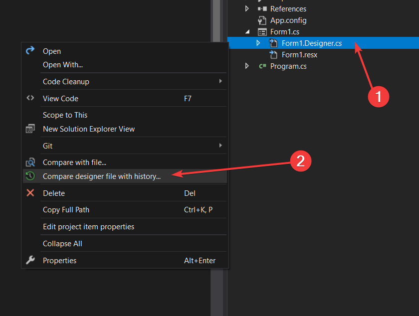
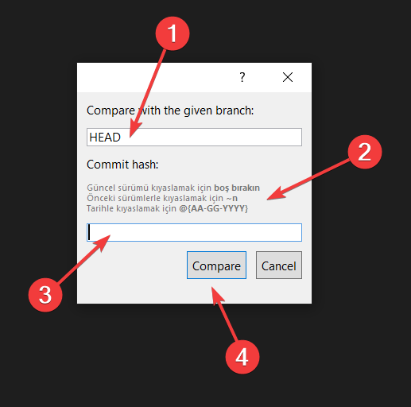
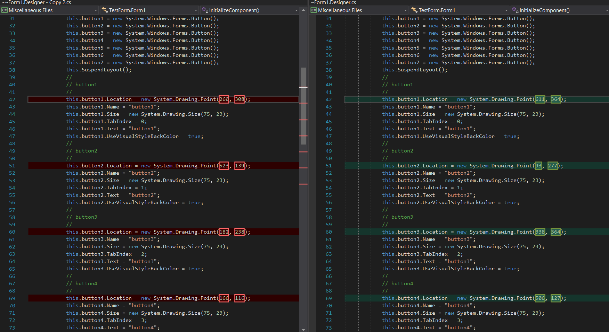
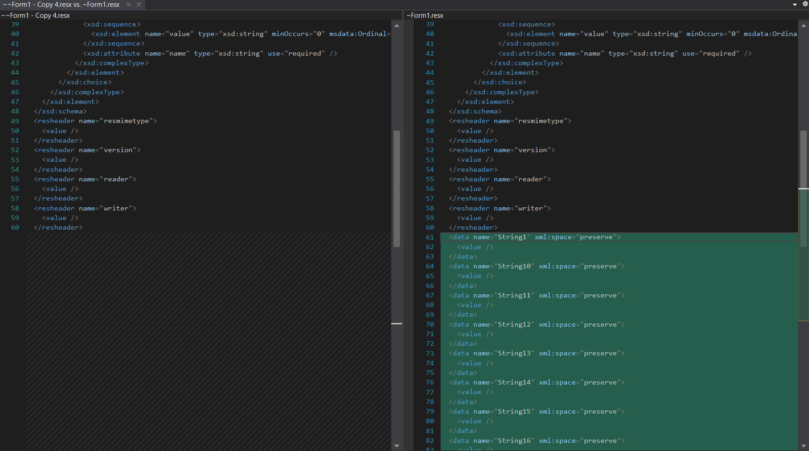
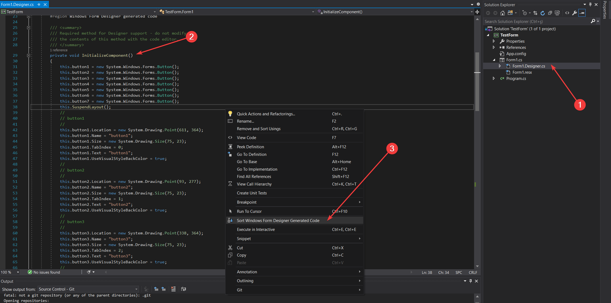
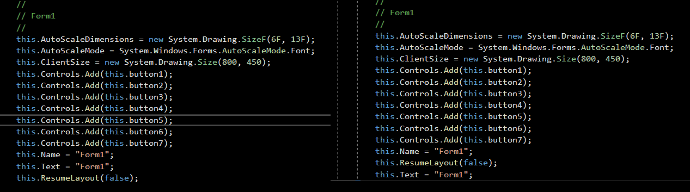
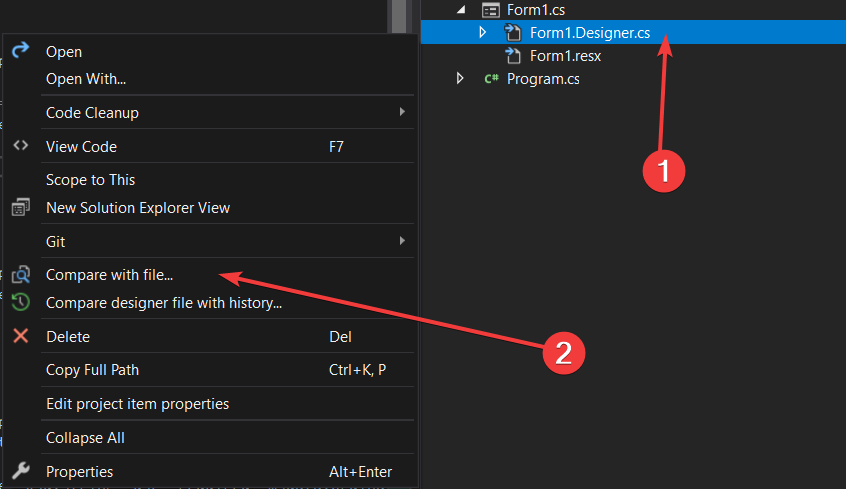
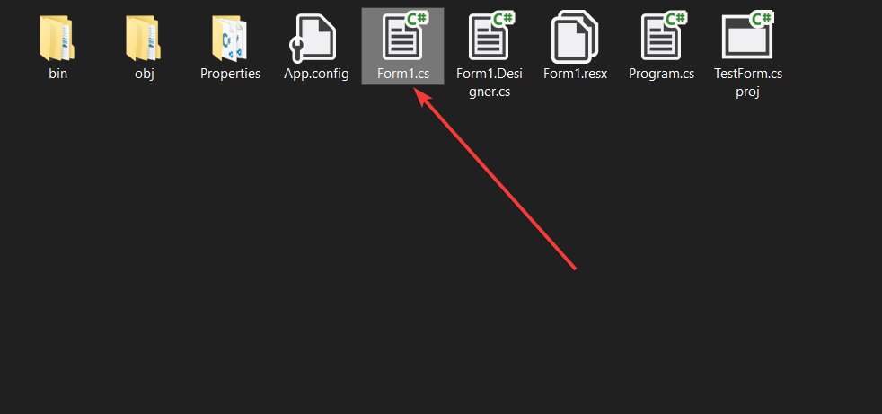
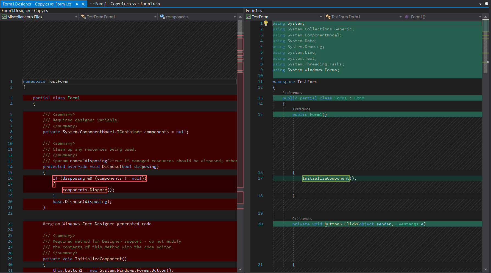

Visual Studio Designer tarafından üretilen kodlardaki karmaşıklığı azaltıp, git ile düzgün bir versiyon kıyaslaması sağlayan eklenti
| 💎 Özellik | 🎯 Amaç |
|---|---|
| 🎨 Designer Dosyalarını Kıyaslama | Windows Form Designer tarafından otomatik olarak oluşturulan kodların konumlarındaki tutarsız değişiklikler, git üzerinde sanki yeni bir satır eklenmiş veya silinmiş gibi gösterilmektedir. Bu işlem de değişiklikleri algılamada sorun oluşturmaktadır. Sorunun çözümüne odaklı bir özelliktir |
| 📂 Resx Dosyalarını Kıyaslama | Windows Resx Designer tarafından otomatik olarak oluşturulan kodların konumlarındaki tutarsız değişiklikler, git üzerinde sanki yeni bir satır eklenmiş veya silinmiş gibi gösterilmektedir. Bu işlem de değişiklikleri algılamada sorun oluşturmaktadır. Sorunun çözümüne odaklı bir özelliktir |
| 🚄 Designer Üretilen Kodu Sıralama | Windows Form Designer tarafından otomatik olarak oluşturulan kodların konumlarındaki tutarsız değişiklikler, git üzerinde sanki yeni bir satır eklenmiş veya silinmiş gibi gösterilmektedir. Bu işlem de değişiklikleri algılamada sorun oluşturmaktadır. Sorunun çözümüne odaklı bir özelliktir |
| 📃 Herhangi İki Dosyayı Kıyaslama | Herhangi bir iki dosya arasındaki farklılıkları kolayca tespit etmeyi sağlayan bir özelliktir |
%TEMP% dizinine ~ ön ekleri ile kopyalanır%TEMP% dizinine kaydedilen dosyalar Visual Studio Diff Tool ile git kullanarak kıyaslanır| 👨💻 Yapımcı | 🤵 Yunus Emre AK ~ YEmreAk.com |
| ✨ Son Güncelleme | 📅 10.09.2020 16:30 |
*.Designer.cs dosyasına sağ tıklayınCompare designer file with history... butonunu seçin
HEAD olarak yazan, kıyaslanma yapılacak branch ismini temsil ederCommitHash kısmı için gerekli açıklamalar form üzerinde verilmiştirCompare butonuna basarak kıyaslamayı başlatınCancel butonuna basarak kıyaslamayı iptal edebilirsiniz📢 Kıyaslama işleminde dosyanın güncel hali ile istenen eski sürümü işletim sistemi tarafından otomatik olarak temizlenen
%TEMP%dizinine sırasıyla~~~ön ekleriyle kopyalanır, gösterilen dosyalardaki değişiklikler asıl dosyayı etkilemez


*.resx dosyasına sağ tıklayınCompare designer file with history... butonunu seçin
HEAD olarak yazan, kıyaslanma yapılacak branch ismini temsil ederCommitHash kısmı için gerekli açıklamalar form üzerinde verilmiştirCompare butonuna basarak kıyaslamayı başlatınCancel butonuna basarak kıyaslamayı iptal edebilirsiniz📢 Kıyaslama işleminde dosyanın güncel hali ile istenen eski sürümü işletim sistemi tarafından otomatik olarak temizlenen
%TEMP%dizinine sırasıyla~~~ön ekleriyle kopyalanır, gösterilen dosyalardaki değişiklikler asıl dosyayı etkilemez

*.Designer.cs dosyasını açın ve açılan pencere içerisine sağ tıklayınSort Windows Form Designer Generated Code butonunu seçin📢 Sıralama sırasında verileri koruma amacıyla sıralanmış kodları dosyaya kaydetmez, dilerseniz ✲ Ctrl S kısayolu ile kaydedebilirsiniz.


Compare with file... butonunu seçin📢 İsterseniz 2 dosyayı birden seçip sağ tıklayarak, ikisi arasındaki farkları görebilirsiniz


